Une Histoire de Résilience
Le parcours inspirant de Roselyne Pipernos face à la maladie de Parkinson, un témoignage d'espoir et de courage.
Préface
Dans l'automne d'une vie, lorsque les années se tissent en une tapisserie d'expériences où chaque fil narre une lutte, une victoire ou une perte, une personne de plus de soixante-dix ans se tient à l'orée d'un monde en pleine métamorphose. Elle contemple une ère où l'intelligence artificielle (IA), telle une divinité contemporaine, façonne des horizons jadis inconcevables. Vivre avec son temps, pour ces âmes riches d'histoire, n'est pas une simple nécessité, mais une exhortation à danser avec l'inconnu, à embrasser les prodiges d'une époque où la science redéfinit les contours de l'humain.
Le domaine médical, porté par les ailes de l'IA, s'est mué en un sanctuaire d'espoir où les frontières du possible s'élargissent sans cesse. Les algorithmes, tels des oracles modernes, scrutent des constellations de données cliniques, prédisant l'évolution des pathologies avec une précision qui confine à la prescience. Dans le champ de la neurologie, et particulièrement dans la lutte contre la maladie de Parkinson, les avancées techniques s'apparentent à des miracles forgés par la raison.
Au-delà de la prouesse technique, ces avancées incarnent l'esprit d'une époque : une époque où l'âge n'est plus un refuge dans le passé, mais un tremplin vers l'avenir. C'est dans cet esprit que s'ouvre l'histoire de Roselyne Pipernos, une femme dont le courage et la ténacité illuminent les pages qui suivent.
Témoignage
L'Histoire de Roselyne
Je m'appelle Roselyne Pipernos, et à 73 ans, j'ai traversé des vallées obscures où le corps trahit l'âme, où la volonté chancelle face à une maladie implacable. En 2019, dans une salle austère d'un hôpital parisien, le diagnostic est tombé : Parkinson. Ce mot, lourd comme une sentence, planait déjà dans mon esprit. Depuis vingt ans, un neurologue attentif m'accompagnait, scrutant les prémices de la maladie dans le frémissement discret de mes mains ou la raideur insidieuse de mes pas.
Pendant cinq ans, j'ai cherché un espoir dans ce brouillard. Puis, j'ai rencontré un neurochirurgien d'exception. Sa présence allait au-delà d'un simple échange médical : il semblait sonder mon âme pour y déceler une étincelle de courage. Après des mois de réflexion, j'ai pris une décision audacieuse : le 13 février 2024, je subirais une opération pour poser un stimulateur cérébral.
L'intervention fut un succès, mais la victoire fut de courte durée. Peu après, mes jambes se mirent à trembler avec une intensité nouvelle. Une chute brutale me précipita à l'hôpital : le stimulateur, délogé, menaçait ma santé. Le 21 mars 2024, une opération d'urgence fut nécessaire pour le retirer. Le 7 mai 2024, une troisième opération marqua un tournant décisif. À mon réveil, un silence étrange m'enveloppa : mes jambes ne tremblaient plus. Ce n'était pas seulement l'absence de symptômes, c'était une renaissance.
Encouragée, j'ai désactivé le stimulateur pendant dix jours, puis 35 jours. Aucun tremblement, aucune rechute. Mon neurochirurgien expliqua une hypothèse fascinante : ce nouveau placement des électrodes semblait avoir réécrit les règles du jeu. Aujourd'hui, je marche, je vis, je respire. Le Parkinson, tapi dans l'ombre, n'a pas disparu, mais il ne régit plus mes jours.
Parcours en Images et Vidéos


Remerciements à l'équipe médicale de Henri Mondor
Ce chemin, je ne l'ai pas parcouru seule. Une troupe précieuse m'a accompagnée.
À l’attention du Professeur Palfi et de son équipe,
Cher Professeur Palfi,
C’est avec une profonde émotion et une immense reconnaissance que je m’adresse à vous pour vous témoigner ma gratitude pour l’exceptionnelle qualité des soins que vous et votre équipe m’avez prodigués à l’hôpital. Votre écoute attentive, votre engagement sans faille et votre expertise remarquable m’ont permis de retrouver une vie plus sereine et une autonomie que je n’osais plus espérer.
Grâce à votre savoir-faire, je vis désormais sans mon stimulateur cérébral, débranché depuis cinq mois. Ce résultat, qui semblait autrefois inconcevable, est le fruit de votre talent, de votre dévouement et de l’accompagnement personnalisé que vous m’avez offert tout au long de mon suivi médical. Malgré mes questions parfois pressantes ou maladroites, vous avez toujours su faire preuve de patience, de disponibilité et d’une humanité rare, répondant présent au moment où j’en avais le plus besoin.
Votre capacité à résoudre les situations les plus complexes, alliée à votre engagement indéfectible envers vos patients, vous a valu le surnom de « chirurgien aux mains magiques », une réputation pleinement méritée, ainsi que la confiance de vos pairs et votre nomination à la tête de votre service. Grâce à vous et à votre équipe, j’ai retrouvé une qualité de vie et une dignité auxquelles je n’osais plus croire. Pour immortaliser cette période marquante de mon parcours médical, j’ai entrepris d’écrire un journal en hommage à votre travail exceptionnel.
Docteur Jean-Marc Gurruchaga,
Brillant neurologue et technicien des électrodes, votre présence constante, que ce soit dans les situations urgentes ou plus routinières, m’a profondément impressionné. Votre humanité, votre sincérité et votre professionnalisme m’ont touché au plus haut point. À l’aube de votre retraite bien méritée, je vous souhaite une excellente santé et beaucoup de bonheur. Merci du fond du cœur pour tout ce que vous avez fait pour moi.
Docteur Yara Beaugendre,
Spécialiste de la maladie de Parkinson, votre gentillesse infinie, votre joie de vivre communicative et votre présence rassurante ont été une véritable lumière dans mon parcours. Vous faites partie intégrante de cette équipe d’exception, et votre capacité à apaiser et à guider vos patients avec un savoir-faire pointu est remarquable. J’ai eu une chance immense de bénéficier de votre accompagnement.
Aux secrétaires du cabinet,
Je tiens à saluer chaleureusement l’équipe administrative qui, par son professionnalisme et sa bienveillance, a grandement facilité mon parcours médical. Votre accueil toujours courtois, votre efficacité dans la gestion des rendez-vous et votre patience face à mes nombreuses demandes ont été d’un grand soutien. Vous êtes le premier visage de l’équipe, et votre rôle essentiel dans la coordination et l’organisation des soins mérite toute ma reconnaissance. Votre sourire et votre disponibilité ont rendu chaque interaction plus humaine et rassurante.
À vous tous, je veux exprimer ma profonde reconnaissance pour avoir transformé l’inimaginable en réalité. Grâce à votre équipe hors du commun, j’ai retrouvé une vie pleine de sens, libérée des contraintes que je pensais insurmontables. Vous avez toute ma gratitude, mon respect et mon admiration.
Avec toute ma considération,
R. Pipernos
{kind=link}
{kind=link}
{kind=link}

Carole, infirmière de nuit
Nous avons eu les atomes crochus dès sa première visite. Très professionnelle, très attentive et très perspicace, elle a été très pédagogique et rassurante face à toutes mes préoccupations.

Diogou
Secrétaire
{kind=link}
{kind=link}
Autres intervenants

Dr. Julie SCHULER
Médecin Généraliste, Tel un médécin de famille d'autrefois, elle s'est entièrement dévouée à mon état de santé de bout en bout en me faisant grâce de sa disponibilité et de son professionnalisme.
{kind=link}
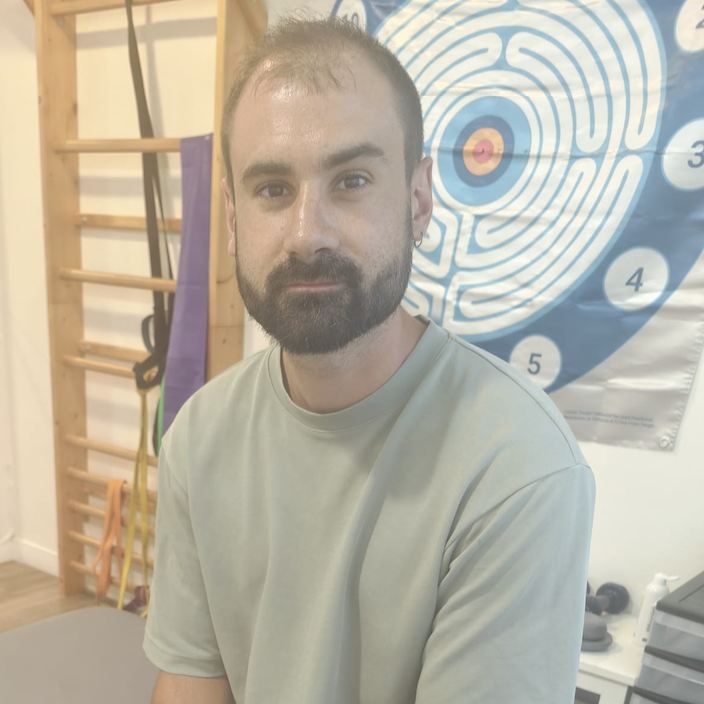
Florian Julien
kinésithérapeute hors pair, il adapte ses soins selon vos maux et vos besoins. Sa gentillesse, son amabilité et son attention sont tout autant remarquables que ses soins. On s'est lié d'une amitié fraternelle.
{kind=link}
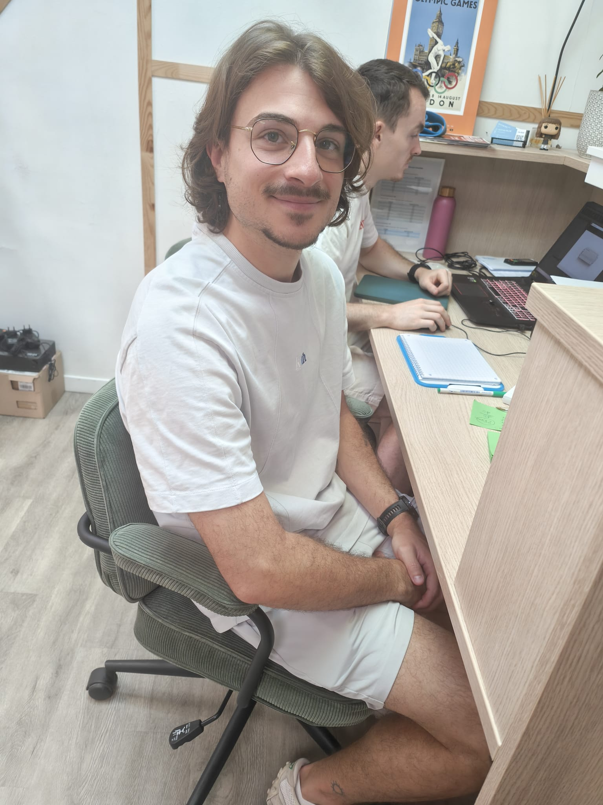
Yohann Millotte
kinésithérapeute en balnéothérapie, d'une grande sympathie et d'un grand sens de l'humour. Son accompagnement personnalisé m'a permise de me sentir écoutée et à l'aise. Son engagement dans le travail est à la hauteur du respect et de l'amitié qu'il me témoigne.
{kind=link}
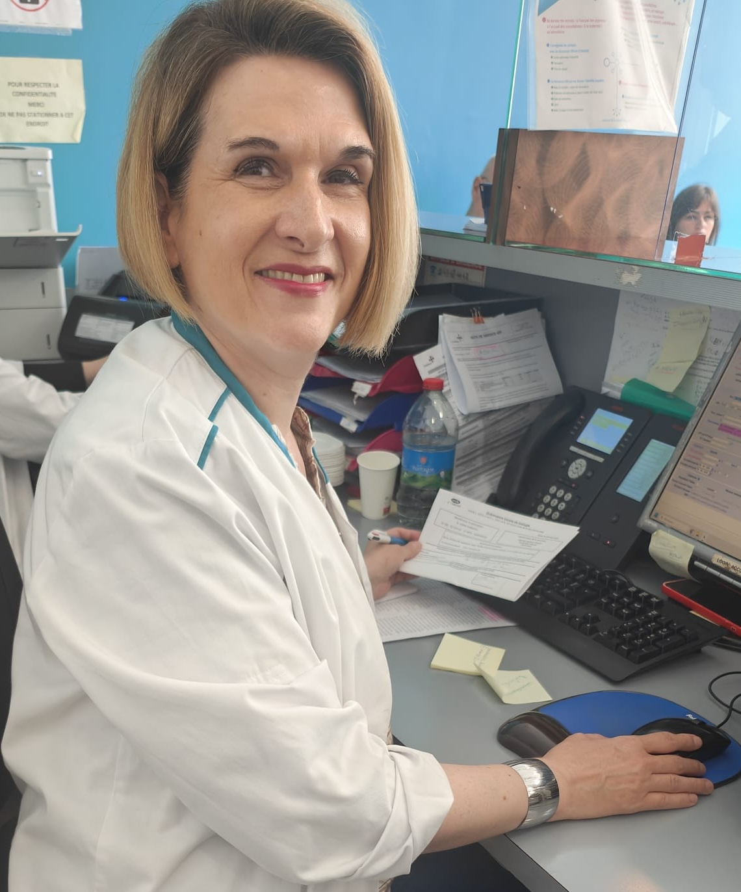
Sandra, Technicienne de labo
Avec sa collègue Cindy, elles m'ont agréablement accompagnée depuis plusieurs années avec toujours de professionnalisme et de bonne volonté.
{kind=link}

Christophe, Infirmier
Depuis tant d'années, j'ai eu la chance de pouvoir compter sur eux, à la moindre occasion, les plus urgentes comme les plus relatives.
(cliquez sur la photo pour voir la video)
Remerciements à ma Famille et à Mes amis
{kind=link}
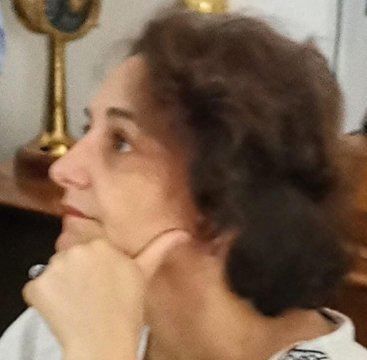
Carole CLAYES et son fils Raphaël.
Toujours proche de moi depuis tant d'années, nous avons régulièrement l'occasion de nous retrouver dans une ambiance familiale. Elle est toujours prête à m'aider surtout dans les circonstances les plus importantes.

Thierry CLAYES
Ingénieur d'études en Histoire moderne et contemporaine au Centre Roland Mousnier. C'est un ami exceptionnel, un véritable érudit, toujours prêt à accéder à toutes mes requêtes, il me soutient en toutes circonstances de façon quasi inconditionnelle.
{kind=link}
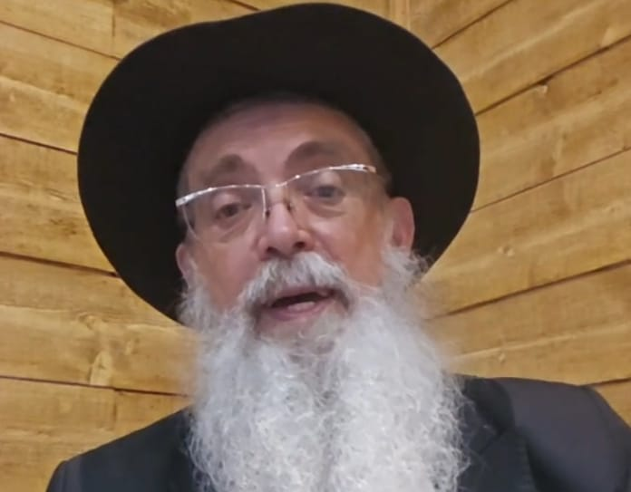
David Tordjman
Dès que je l'ai rencontré, je l'ai surnommé le "Roi David", il est rempli d'amour et de sagesse et de générosité. Nous nous sommes connus lors d'une émission de radio et depuis nous ne nous sommes plus lâchés. Il répond toujours présent lorsque je l'appelle malgré toutes ses occupations. Je souhaite que la force soit toujours avec lui.

Martine et Marcel
Nous nous sommes connus lors d'une croisière et depuis cette occasion on ne s'est plus quitté et leur assistance lors des moments les plus difficiles m'a significativement marquée.

Dr. Philippe Levy
Riche dans le cœur et dans les actes, il se distingue par des qualités intrinsèques hors normes et hors du commun. C'est un soutien indéfectible, sur qui je peux toujours compter tout comme il pourra toujours compter sur moi.

Sylvie Franklin
Ma meilleure amie par tous les temps, omniprésente dans ma vie dans les bons moments comme dans les plus intenses. Nous partageons depuis plus d'une vingtaine d'années une amitié qui s'est muée en une solide fraternité.
{kind=link}

Dr. Ruben Kabla, Angiologue
Parle peu mais agit beaucoup et de façon significative notamment lorsque j'étais dans une situation délicate. Il est véritablement dévoué à son travail et à ses patients.
{kind=link}
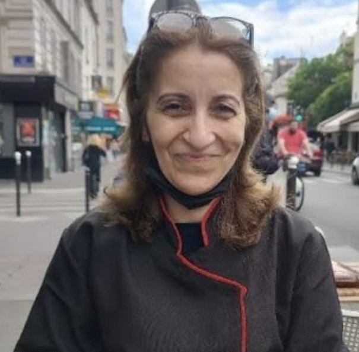
Ghania
Je la considère comme une petite sœur, c'est une personne rafraichissante dont on peut toujours compter sur le réconfort et la présence.
{kind=link}

Sophie de Rieupéroux
Une amie adorable, attentionnée, elle n'a pas cessé de prendre de mes nouvelles et me témoigne un soutien indéfectible
{kind=link}
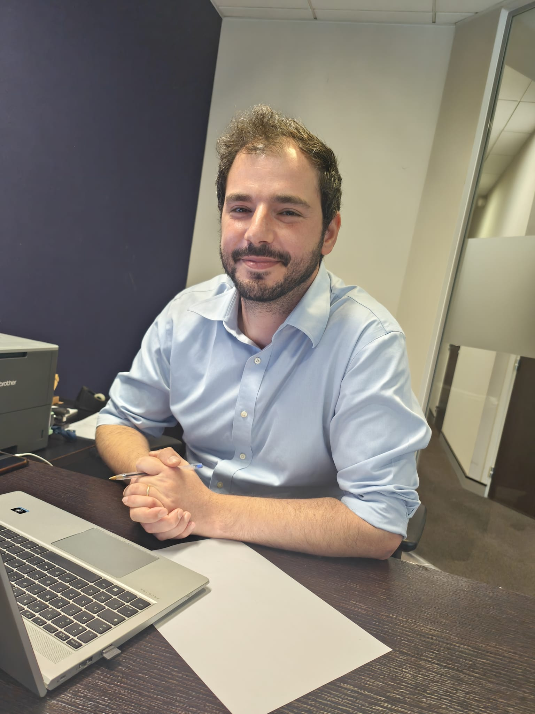
Natanyel Assouline
Ami et collaborateur. Il est omniprésent et déborde d'une bienveillance sans pareille.

Franklin Robert
Nous nous sommes connus lorsqu'il était en service au Ministère de l'équipement sous le PR. Chirac

Andrée
Une amie qui m'a apporté beaucoup de positivité et un soutien sans faille.
{kind=link}
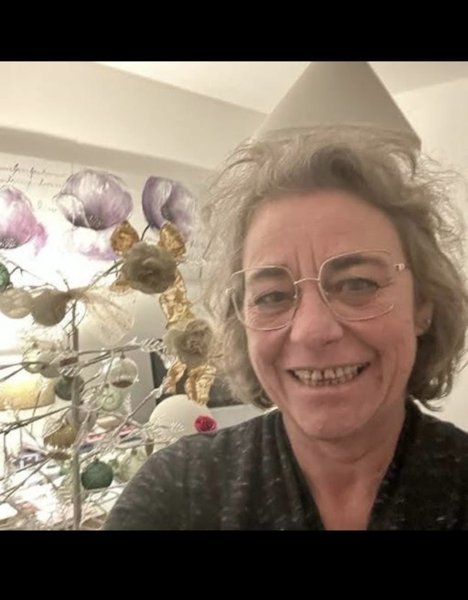
Murielle, infirmière à Dax
Adorable, elle prend toujours du temps prendre soin de vous avec beaucoup de gentillesse, de positivité et de réconfort.

Mes amies radiologues qui m'ont soignée durant plusieurs années. Je les ai surnommées mes porte-bonheur.
{kind=link}
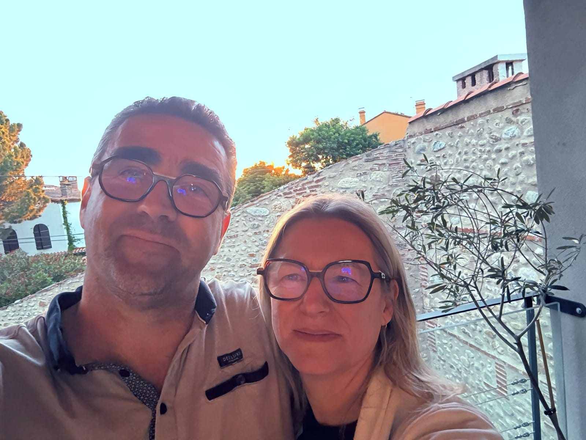
Carlos et son épouse
Serviable, adorable, un ami sur qui on peut toujours compter. Il a une très belle famille avec de très belles valeurs.
{kind=link}
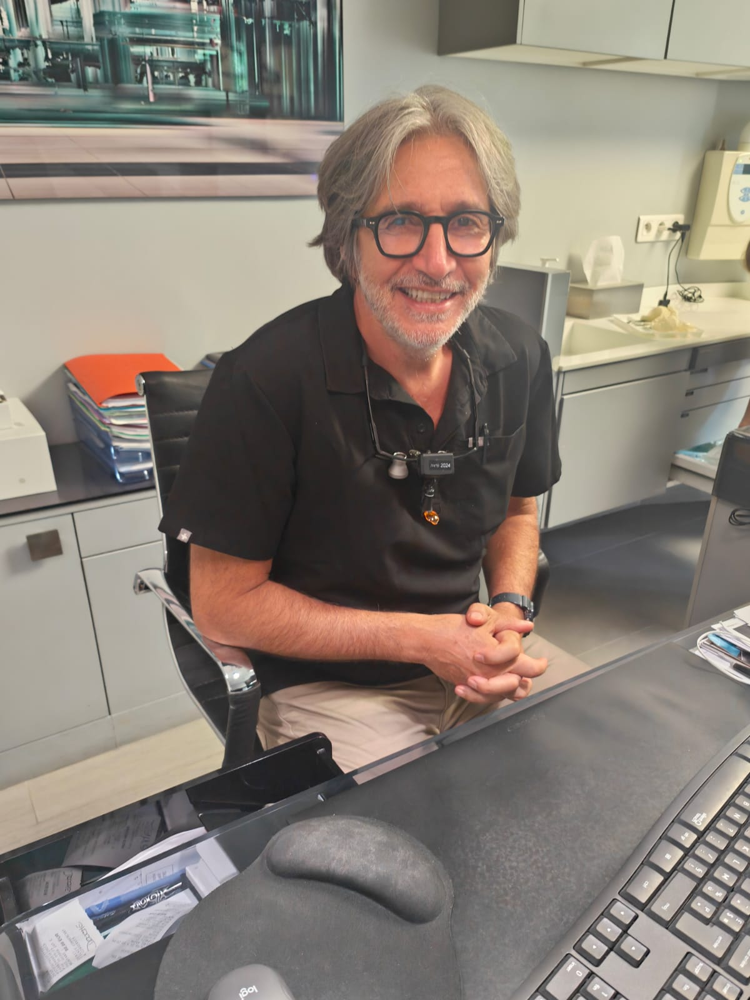
Dr. Ruben Hazan
Toujours heureux lorsqu'on se revoit, il est toujours bienveillant envers moi et en particulier au sujet de ma santé.
{kind=link}
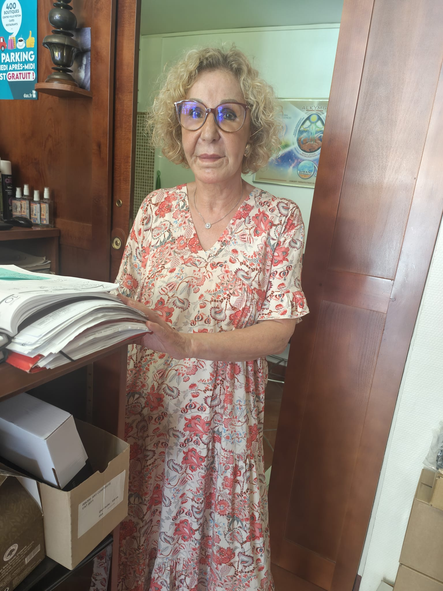
Rose
On s'est rencontrés à même temps qu'Hattifa à Dax, c'est une belle personne remplie de grâce avec qui je suis resté en contact.
Un Message d'Espoir
J'ai écrit ce recueil pour transmettre du courage et de la ténacité, car demain, ce sera peut-être votre tour de voir la lumière. Mon parcours est unique, et j'invite toutes les personnes concernées à oser, à sauter le pas.
N'hésitez pas à me contacter : stephane.palfi@orange.fr
Lettre ouverte pour le financement de la recherche sur la stimulation cérébrale profonde
À l’attention des institutions de l’Union européenne, de Madame La présidente de la commission Européenne Ursula Von Der Leyen, de Monsieur Le commissaire à la Santé Oliver Varhélyi, du ministère de la Santé, des associations, des structures de recherche et des particuliers engagés dans la lutte contre les maladies neurodégénératives,
La maladie de Parkinson, touchant plus de 200 000 personnes en France et des millions à travers le monde, représente un défi majeur pour la santé publique. Cette affection neurodégénérative, caractérisée par la perte progressive des neurones dopaminergiques, entraîne des troubles moteurs et non moteurs qui altèrent profondément la qualité de vie des patients et de leurs proches. Si des traitements comme la stimulation cérébrale profonde (SCP) ont permis des avancées significatives, il reste urgent de soutenir la recherche pour développer des thérapies encore plus efficaces, moins invasives et accessibles à un plus grand nombre de patients.
En tant que personne ayant bénéficié des avancées de la recherche menée par le Professeur Stéphane Palfi et son équipe au sein de l’Association pour la Recherche sur la Stimulation Cérébrale (ARSC), je témoigne de l’impact transformateur de leurs travaux. Grâce à leur expertise et à leur engagement, j’ai retrouvé une autonomie et une qualité de vie que je croyais perdues, vivant désormais sans activer mon stimulateur cérébral depuis cinq mois. Ces résultats, qui semblaient autrefois inenvisageables, sont le fruit de décennies de recherche et d’innovation, notamment dans le domaine de la stimulation cérébrale profonde et des biothérapies.
Les travaux du Professeur Palfi, chef du service de neurochirurgie à l’hôpital Henri-Mondor (AP-HP) et pionnier dans les thérapies innovantes pour les maladies neurodégénératives, ont déjà ouvert des perspectives prometteuses. Ses recherches, notamment sur la thérapie génique et la stimulation cérébrale profonde, ont démontré une amélioration significative de la motricité des patients et une excellente tolérance, comme en témoignent les résultats publiés dans *The Lancet* en 2014. Ces avancées ne sont qu’un début : des projets comme le développement de neurostimulateurs adaptatifs en boucle fermée ou l’exploration de nouvelles cibles thérapeutiques pourraient révolutionner la prise en charge de la maladie de Parkinson et d’autres pathologies similaires.
Pour que ces innovations se concrétisent et bénéficient au plus grand nombre, un soutien financier et institutionnel accru est indispensable. Nous appelons donc l’Union européenne, le ministère de la Santé, les associations et fondations, ainsi que les structures de recherche et les particuliers, à investir dans les travaux de l’ARSC et du Professeur Palfi. Le financement de la recherche est crucial pour :
- Approfondir la compréhension des mécanismes de la maladie de Parkinson et identifier de nouvelles cibles thérapeutiques.
- Développer des technologies moins invasives, comme des neurostimulateurs adaptatifs, pour améliorer l’efficacité et réduire les effets secondaires.
- Permettre des essais cliniques à plus grande échelle, accélérant ainsi la mise à disposition de traitements innovants pour les patients.
- Soutenir des collaborations interdisciplinaires entre chercheurs, cliniciens et institutions.
Chaque contribution, qu’elle provienne d’institutions publiques, d’associations ou de donateurs privés, est un pas vers un avenir où la maladie de Parkinson ne sera plus une condamnation à une perte d’autonomie. En soutenant l’ARSC, vous investissez dans l’espoir, l’innovation et la dignité des patients. Ensemble, nous pouvons faire progresser la recherche et transformer la vie de millions de personnes touchées par cette maladie.
Je vous invite à vous engager dès aujourd’hui, que ce soit par des financements publics, des dons privés ou une sensibilisation accrue à l’importance de la recherche sur la stimulation cérébrale profonde. Pour plus d’informations sur les moyens de soutenir l’ARSC, je vous encourage à contacter l’équipe du Professeur Palfi à l’hôpital Henri-Mondor.
Avec toute ma gratitude et mon espoir en un avenir meilleur,
R. Pipernos
Soutenir la Recherche
Votre soutien est précieux pour faire avancer la recherche sur la stimulation cérébrale. Chaque don compte.
Faire un don à l'ARSC